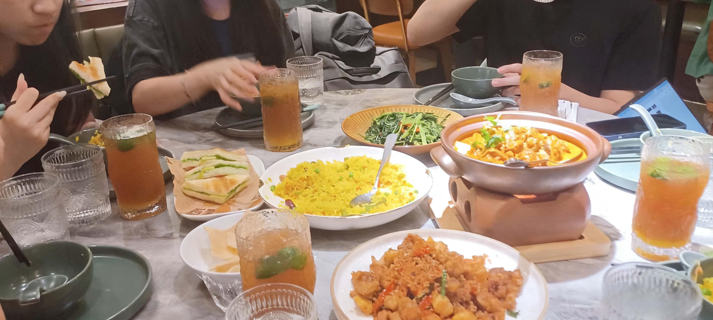
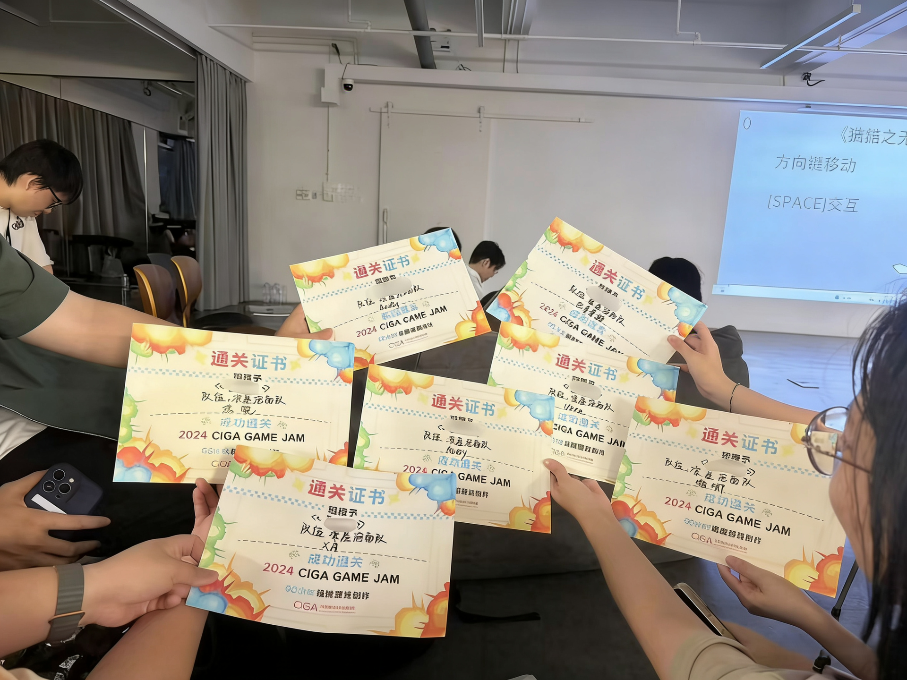

《Eons》是一款独特的抽象解谜游戏，玩家需要在关卡中获取有限的端点，利用两种端点不同的作用并结合关卡中的不用机关，让射线无限的延伸下去。将射线的延伸视为无限向前的时间，通过玩家的操作促成每一个时间阶段的发展，让无限的时间有意义。将每一个关卡赋予一个历史发展阶段，让整个关卡流程的视觉效果成为一本史书，一个在无限时间流逝中发展的有限的成就。
Eons
将射线的延伸视为无限向前的时间
游戏简介
制作思路
制作思路源于对时间概念的哲学思考，我们希望通过游戏的形式来探索时间的本质和意义。通过抽象的几何元素和射线的延伸，我们试图创造一种独特的游戏体验，让玩家思考时间的流逝和意义。
技术实现方面，我们使用C#语言和Unity引擎进行游戏开发，利用Unity的强大渲染能力和物理系统实现游戏效果。游戏采用模块化设计，将关卡系统、射线系统、解谜机制等功能分离，提高代码的可维护性。
开发过程中，我们重点关注了游戏的视觉设计和谜题设计，通过精心设计的关卡和视觉效果，确保游戏的可玩性和思考性。
团队制作花絮
《Eons》是由我们7人团队在2024年7月的48小时极限开发大赛-深圳凉屋站制作的，整个开发过程充满了思考和创新。从最初的概念设计到最终的游戏上线，我们经历了几次迭代和改进。
开发初期，我们花费了大量时间讨论游戏的核心概念和视觉风格，由于三个策划的观点不一爆发了言语冲突，这种情况在游戏开发的过程中很常见所以也见怪不怪了哈哈，最终以投票确定了抽象几何的设计方向。在实现过程中，我们遇到了射线系统、关卡设计等技术挑战，但通过团队协作和不断学习，最终成功解决了这些问题。
测试阶段是最有趣的部分，我们发布到顽社并且在比赛线下巡演邀请了许多朋友参与测试，收集他们的反馈并不断优化游戏体验。
花絮照片

